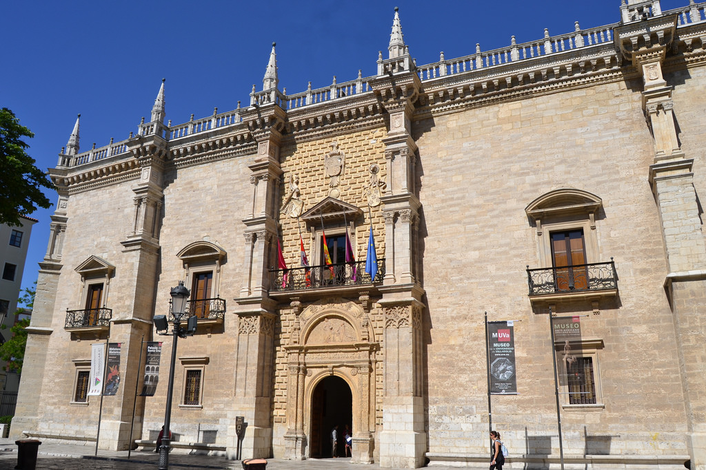

{kind=link}
 |
Esta página fue modificada por última vez el 2017-05-24 20:17:39 (UTC) | GitHub pages |
| Etapa 12: Valladolid | |||||
|---|---|---|---|---|---|
| Provincia: Valladolid | Superficie: km2 | Población: ( hab./km2) |  | ||
| Municipio(s) visitado(s): Valladolid | |||||
| Distancia recorrida: | Fecha: | Duración: 1 día | |||
| Arquitectura civil: | |||||
| Arquitectura religiosa: | |||||
| Museos: | |||||
| Naturaleza: | |||||
| Otros: | |||||
La provincia de Valladolid se encuentra en la comunidad autónoma de Castilla y León, separada de la provincia de Madrid por la de Segovia.
Tras un trayecto de alrededor de 1 hora desde Madrid-Chamartín, pasando por el túnel ferroviario de la Sierra de Guadarrama con parada en Segovia-Guiomar, se llega a la Estación de Valladolid-Campo grande. Muy próxima a la estación se encuentra una gran zona ajardinada llamada Campo grande en la que también está una de las Oficinas de Turismo. Debo decir que el trato en la oficina fue excelente, había varias mesas informativas y te daban todo tipo de detalles, mucho material y buen personal, es con diferencia la mejor oficina que me he encontrado hasta ahora.
Con el mapa en la mano y los puntos más importantes señalados en él, me dispuse a recorrerlo. La primera parada consistió en una breve visita a los jardines de Campo grande, la estatua de Zorrilla y el monumento a Colón, aunque sin entretenerme demasiado.
Tras recorrer la calle Santiago, llegué a la Plaza Mayor de Valladolid, en la que como de costumbre estaban montando un escenario para algún evento que impide que puedas ver la plaza en toda su plenitud. Tras hacer algunas fotos, el siguiente destino era el Museo de Valladolid, del que principalmente estaba interesado en las salas de Bellas Artes, pues las de prehistoria e historia antigua "siempre son lo mismo" en mi opinión (piedras talladas, puntas de flecha, vasijas, algún colmillo de mastodonte, monedas romanas, etc). La mayoría de los cuadros en la sección de Bellas Artes eran de caracter religioso y también había algunos mosaicos grandes, pero bastante deteriorados. Para ser Valladolid una ciudad importante, me pareció algo escaso el museo. Compré algunas postales a 0,10 € a la salida no obstante (el precio más barato al que las he encontrado, he de decirlo). Por cierto, el museo estaba completamente vacío.
Al salir del museo y mientras me dirigía al siguiente, el Museo Nacional de Escultura, me encontré con algo inesperado, una exposición de los 40 años de Comisiones Obreras en el Archivo General de Castilla y León. A pesar de conocer la escasa combatividad de este y el otro sindicato mayoritario (UGT), tenía mucho interés en entrar y me hizo ilusión, pues es difícil encontrar en España actividades, exposiciones y no digamos ya algún "museo" que trate el tema del movimiento obrero y las luchas sociales.
La exposición hacía un repaso desde los orígenes del sindicato (incluso se remontaba a cuando todavía no existía como tal, pues no fue legalizado hasta la Transición), tratando la época del franquismo, la infiltración en el sindicato vertical, etc. Con abundantes paneles, fotografías, descripciones, carteles de huelgas, publicaciones (como un ejemplar de Mundo Obrero de 1933), algún objeto de valor histórico (como una multicopista manual "Vietnamita" usada en la clandestinidad), hacían la exposición muy entretenida y a la vez instructiva. La figura de Marcelino Camacho estaba bastante presente, como era de esperar.
En la Oficina de Turismo me advirtieron que había una iglesia que mucha gente confundía con el Museo Nacional de Escultura y efectivamente a mí me pasó lo mismo. Siguiendo los letreros que indicaban la dirección al museo, llegué a una plaza con un gran edificio con una fachada muy barroca y llena de esculturas. Cuando fui a entrar me di cuenta que trataba de una iglesia y no del museo. Rodee la iglesia y entonces vi un gran cartel rojo "Museo Nacional de Escultura", la entrada pues estaba algo escondida. Se acercaba la hora de almorzar y el museo cerraba a las 14:00, así que no pude visitar todas las salas. Aunque la entrada era válida para todo el día y en un principio pensé en regresar a las 16:00 cuando abrieran de nuevo, finalmente no lo hice.
Después de salir del museo, comer algo y descansar un rato, seguí las indicaciones del mapa para llegar a la zona de la catedral, cuya torre del reloj es imponente. Junto a ella y a una plaza con un monumento a Miguel de Cervantes se encuentra la Universidad de Valladolid y su famosa fachada.
Finalmente me dirigi a uno de los lugares más curiosos y singulares de Valladolid, el Museo de Arte Africano. Compuesto de tres grandes colecciones de esculturas (la mayoría en terracota) e indumentaria procedentes de multitud de países de África, es una excelente oportunidad para ver "otro tipo de arte" y tomar perspectiva respecto al arte europeo u occidental.
Tras esto, no me quedaban fuerzas para mucho más. He de reconocer que no vi el Pisuerga, "aprovechando que pasa por Valladolid...". Eso será la próxima vez que vuelva por allí.
| << Etapa 11: Burgos | Etapa 12: Valladolid | [[| >>]] |
|
Esta página fue modificada por última vez el 2017-05-24 20:17:39 (UTC) | GitHub pages |